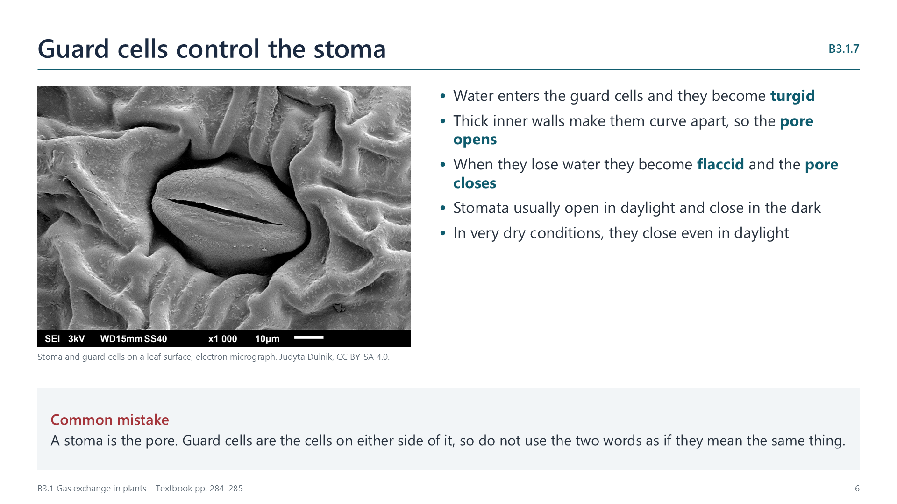

How leaves are adapted to exchange gases
pp. 283–286A leaf must take in carbon dioxide for photosynthesis, while limiting its loss of water. Being flat and thin gives it a large surface area and short diffusion distances.
| Structure | Adaptation |
|---|---|
| Waxy cuticle | A largely impermeable layer, so gases and water vapour must pass through stomata, where flow is controlled |
| Epidermis | Most pores are in the lower epidermis, which is shaded and cooler, and this reduces water loss |
| Air spaces | Let gases circulate between loosely packed cells, maintaining gradients |
| Spongy mesophyll | A large, moist surface for gases to enter and leave cells |
| Stomatal guard cells | Open and close the pore, controlling gas exchange and water loss |
| Veins | Xylem supplies water, and phloem removes sugars, which helps to maintain gradients |
When guard cells take up water they become turgid and curve apart, opening the pore. When they lose water they become flaccid and the pore closes.

Watch out: the stoma is the pore, and the guard cells are the cells around it.